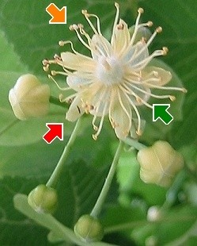
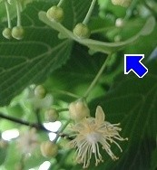

|
| Die Sommerlinde blüht im Juni.
Die Blüten duften sehr stark. Sie werden von Bienen und Hummeln bestäubt.
 |  Der Blütenstand ist eine Rispe mit 2-5 Blüten. Der Stiel ist mit einem Tragblatt verwachsen.
Die Blüte hat 5 hellgelbe Blütenkronblätter, 5 weiße Kelchblätter und viele Staubblätter. In der Mitte ist ein runder Fruchtknoten.
|